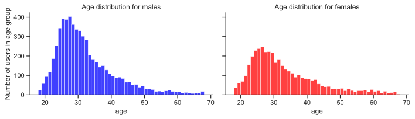
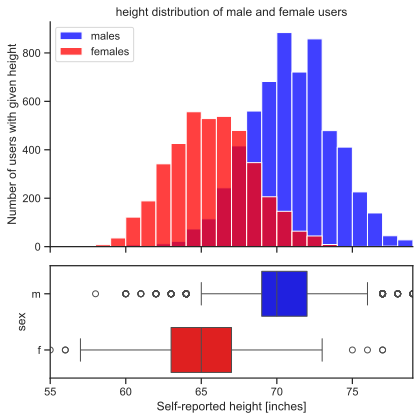
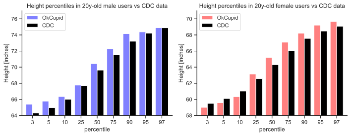

1 Tutorial 1
1.1 Getting to Know Pandas and Jupyter Notebooks
Jupyter Notebooks are an open-source web application that can be used to create and share documents that contain live code, equations, visualizations and narrative text.
Pandas is a software library written for the Python programming language for data manipulation and analysis.
1.1.1 In today’s tirgul we will learn:
- A bit about Jupyter Notebook
- How to import data into Pandas and
- Some basic tools for manipulation.
1.2 Opening a Jupyter Notebook
If you’ve never used a Jupyter Notebook before…
Install Anaconda (https://docs.anaconda.com/anaconda/install/)
Option 1: Open Anaconda Navigator and click on “Jupyter Notebook.” Option 2: Open terminal and type
jupyter notebookfollowed by Enter.**Navigate to the folder (i.e., directory) that you want to be in.
Click “New–>Python 3 Notebook”
**There are lots of other ways to do this. You can also use Visual Studio Code, or Binder… the choice is yours.
1.3 About Jupyter Notebook
Jupyter Notebook is an open-source web application that allows you to create and share documents that contain live code, equations, visualizations, and narrative text. It’s a great tool for interactive data analysis, scientific computing, and educational purposes.
In Jupyter Notebook, you’ll see two main types of cells: code cells and markdown cells.
1.3.1 Code cell
Code cells are where you can write and execute Python (or other programming language) code. To create a new code cell, click on the + icon in the toolbar or use the Insert menu. To run a code cell, you can click the Run button in the toolbar, or press Shift + Enter on your keyboard. The code in the cell will be executed, and any output will be displayed below the cell.
1.3.2 Markdown cell
Markdown cells are where you can write formatted text using Markdown syntax. Markdown is a lightweight markup language that allows you to add headings, lists, links, images, and more to your text. In fact, this is a markdown cell To create a new markdown cell, click on the + icon and select Markdown from the dropdown menu. To render the markdown as formatted text, you can also run the cell using Shift + Enter.
1.3.3 Execution order
The order of appearance of cells in your notebook doesn’t necessarily determine the order in which they are executed. Instead, Jupyter Notebook keeps track of the order in which cells are run, and uses that order to ensure that all necessary code is executed before it’s used in later cells. You can see the execution order of cells by looking at the number to the left of the cell (e.g., [1]) - this indicates the order in which the cell was executed.
In summary, Jupyter Notebook is a powerful tool for interactive data analysis and scientific computing. Code cells allow you to write and execute Python code, while markdown cells allow you to write formatted text using Markdown syntax. You can run cells using the Run button or Shift + Enter, and Jupyter Notebook keeps track of the order in which cells are executed to ensure that your code runs correctly.
1.4 Short Markdown example
To create headers, you can use the “#” symbol followed by a space, and then type your header text. The number of “#” symbols determines the level of the header, with one “#” indicating the largest header and six “#” indicating the smallest header. For example:
# This is a level 1 header
## This is a level 2 header
### This is a level 3 headerTo go down a row and write bullet points, you can use the “*” symbol followed by a space, and then type your bullet text. For example:
- This is a bullet point
- This is another bullet point
1.4.1 There are many more things you can do, this cheat sheet can be very helpful.
1.5 Download the required dataset
We are going to be using a dataset based on information from 60k OkCupid users. The dataset was collected by web scraping the OKCupid.com website on 2012/06/30, and includes profiles of people within a 25 mile radius of San Francisco, who were online in the previous year (after 06/30/2011), with at least one profile picture. The data includes age, sex, orientation as well as text data from open ended descriptions. You can download the dataset here: https://github.com/ErezFeuer/Introduction-to-Data-Science-Tutorials/blob/master/tirgul_1/okcupid_profiles.csv.
How to download from files from Github https://www.gitkraken.com/learn/git/github-download#how-to-downlaod-a-file-from-github
1.6 Getting started with Pandas
You just created a pandas DataFrame.
We can look at our data by using the .head() method.
By default, this shows the header (column names) and the first five rows.
Passing an integer, n, to .head() returns that number of rows.
| age | status | sex | orientation | body_type | diet | drinks | drugs | education | ethnicity | ... | income | job | last_online | location | offspring | pets | religion | sign | smokes | speaks | |
|---|---|---|---|---|---|---|---|---|---|---|---|---|---|---|---|---|---|---|---|---|---|
| 0 | 22 | single | m | straight | a little extra | strictly anything | socially | never | working on college/university | asian, white | ... | -1 | transportation | 2012-06-28-20-30 | south san francisco, california | doesn't have kids, but might want them | likes dogs and likes cats | agnosticism and very serious about it | gemini | sometimes | english |
| 1 | 35 | single | m | straight | average | mostly other | often | sometimes | working on space camp | white | ... | 80000 | hospitality / travel | 2012-06-29-21-41 | oakland, california | doesn't have kids, but might want them | likes dogs and likes cats | agnosticism but not too serious about it | cancer | no | english (fluently), spanish (poorly), french (... |
| 2 | 38 | available | m | straight | thin | anything | socially | NaN | graduated from masters program | NaN | ... | -1 | NaN | 2012-06-27-09-10 | san francisco, california | NaN | has cats | NaN | pisces but it doesn’t matter | no | english, french, c++ |
| 3 | 23 | single | m | straight | thin | vegetarian | socially | NaN | working on college/university | white | ... | 20000 | student | 2012-06-28-14-22 | berkeley, california | doesn't want kids | likes cats | NaN | pisces | no | english, german (poorly) |
| 4 | 29 | single | m | straight | athletic | NaN | socially | never | graduated from college/university | asian, black, other | ... | -1 | artistic / musical / writer | 2012-06-27-21-26 | san francisco, california | NaN | likes dogs and likes cats | NaN | aquarius | no | english |
| 5 | 29 | single | m | straight | average | mostly anything | socially | NaN | graduated from college/university | white | ... | -1 | computer / hardware / software | 2012-06-29-19-18 | san francisco, california | doesn't have kids, but might want them | likes cats | atheism | taurus | no | english (fluently), chinese (okay) |
| 6 | 32 | single | f | straight | fit | strictly anything | socially | never | graduated from college/university | white, other | ... | -1 | NaN | 2012-06-25-20-45 | san francisco, california | NaN | likes dogs and likes cats | NaN | virgo | NaN | english |
| 7 | 31 | single | f | straight | average | mostly anything | socially | never | graduated from college/university | white | ... | -1 | artistic / musical / writer | 2012-06-29-12-30 | san francisco, california | doesn't have kids, but wants them | likes dogs and likes cats | christianity | sagittarius | no | english, spanish (okay) |
| 8 | 24 | single | f | straight | NaN | strictly anything | socially | NaN | graduated from college/university | white | ... | -1 | NaN | 2012-06-29-23-39 | belvedere tiburon, california | doesn't have kids | likes dogs and likes cats | christianity but not too serious about it | gemini but it doesn’t matter | when drinking | english |
| 9 | 37 | single | m | straight | athletic | mostly anything | not at all | never | working on two-year college | white | ... | -1 | student | 2012-06-28-21-08 | san mateo, california | NaN | likes dogs and likes cats | atheism and laughing about it | cancer but it doesn’t matter | no | english (fluently) |
10 rows × 21 columns
Alternatively, to see the last n rows, use .tail().
| age | status | sex | orientation | body_type | diet | drinks | drugs | education | ethnicity | ... | income | job | last_online | location | offspring | pets | religion | sign | smokes | speaks | |
|---|---|---|---|---|---|---|---|---|---|---|---|---|---|---|---|---|---|---|---|---|---|
| 9990 | 33 | single | m | straight | average | mostly anything | socially | never | graduated from masters program | asian | ... | -1 | banking / financial / real estate | 2012-06-30-08-51 | san leandro, california | doesn't have kids | likes dogs | NaN | leo but it doesn’t matter | NaN | english, chinese |
| 9991 | 27 | single | m | gay | athletic | NaN | socially | never | graduated from college/university | asian | ... | -1 | student | 2011-10-13-01-58 | stanford, california | NaN | NaN | NaN | NaN | no | english (fluently), chinese (fluently) |
| 9992 | 39 | single | f | straight | fit | mostly anything | socially | never | graduated from masters program | indian | ... | -1 | computer / hardware / software | 2012-06-07-14-13 | san francisco, california | doesn't have kids | likes dogs | NaN | aquarius and it’s fun to think about | NaN | english (fluently) |
| 9993 | 38 | single | f | straight | athletic | NaN | socially | sometimes | graduated from college/university | NaN | ... | -1 | computer / hardware / software | 2012-06-30-01-51 | oakland, california | doesn't have kids, but wants them | NaN | buddhism | aries | no | english |
| 9994 | 29 | single | m | straight | average | NaN | socially | never | college/university | NaN | ... | -1 | NaN | 2012-01-09-21-35 | oakland, california | NaN | NaN | NaN | NaN | sometimes | english (fluently), chinese (fluently) |
| 9995 | 24 | single | f | straight | curvy | anything | socially | never | graduated from two-year college | black | ... | 20000 | other | 2012-01-16-23-10 | burlingame, california | has a kid | likes dogs and likes cats | christianity and very serious about it | libra but it doesn’t matter | when drinking | english |
| 9996 | 24 | single | f | straight | skinny | NaN | socially | never | graduated from college/university | asian | ... | -1 | NaN | 2012-06-30-02-24 | san francisco, california | doesn't have kids | NaN | NaN | virgo | no | english, chinese |
| 9997 | 19 | seeing someone | f | bisexual | athletic | NaN | rarely | never | NaN | pacific islander, white, other | ... | -1 | NaN | 2012-03-08-13-08 | martinez, california | NaN | has dogs and has cats | NaN | aquarius but it doesn’t matter | sometimes | english |
| 9998 | 47 | single | f | straight | a little extra | NaN | rarely | never | NaN | black | ... | 50000 | transportation | 2012-06-30-06-12 | emeryville, california | NaN | likes dogs and likes cats | other | scorpio and it’s fun to think about | no | english |
| 9999 | 29 | single | f | straight | NaN | mostly vegan | socially | NaN | graduated from college/university | white | ... | -1 | entertainment / media | 2012-06-03-23-30 | san francisco, california | doesn't have kids, but might want them | NaN | NaN | leo | no | english, spanish |
10 rows × 21 columns
1.6.1 To find the number of rows, you can use the len() function. Alternatively, you can use the shape attribute.
1.6.2 What are all the columns in our dataset?
Index(['age', 'status', 'sex', 'orientation', 'body_type', 'diet', 'drinks',
'drugs', 'education', 'ethnicity', 'height', 'income', 'job',
'last_online', 'location', 'offspring', 'pets', 'religion', 'sign',
'smokes', 'speaks'],
dtype='object')age int64
status object
sex object
orientation object
body_type object
diet object
drinks object
drugs object
education object
ethnicity object
height int64
income int64
job object
last_online object
location object
offspring object
pets object
religion object
sign object
smokes object
speaks object
dtype: object1.6.3 Accessing a single column
| height | |
|---|---|
| 0 | 75 |
| 1 | 70 |
| 2 | 68 |
| 3 | 71 |
| 4 | 66 |
| ... | ... |
| 9995 | 66 |
| 9996 | 59 |
| 9997 | 61 |
| 9998 | 64 |
| 9999 | 68 |
10000 rows × 1 columns
0 75
1 70
2 68
3 71
4 66
..
9995 66
9996 59
9997 61
9998 64
9999 68
Name: height, Length: 10000, dtype: int640 75
1 70
2 68
3 71
4 66
..
9995 66
9996 59
9997 61
9998 64
9999 68
Name: height, Length: 10000, dtype: int64It is preferrable to use the bracket notation as a column name might inadvertently have the same name as a DataFrame (or Series) method. In addition, only bracket notation can be used to create a new column. If you try and use attribute access to create a new column, you’ll create a new attribute, not a new column.
You can either use a single bracket or a double bracket. The single bracket will output a pandas Series, while a double bracket will output a pandas DataFrame. A pandas Series is a single vector of data (e.g., a NumPy array) with “an associated array of data labels, called its index.” A DataFrame also has an index.
In our example, the indices are an array of sequential integers, which is the default. You can find them in the left-most position, without a column label. Indices need not be a sequence of integers. They can, for example, be dates or strings. Note that indices do not need to be unique.
1.7 Rename, Index, and Slice
You may have noticed that the height column data is in inches. Let’s rename the column so that the units are included in the name.
Index(['age', 'status', 'sex', 'orientation', 'body_type', 'diet', 'drinks',
'drugs', 'education', 'ethnicity', 'height_inches', 'income', 'job',
'last_online', 'location', 'offspring', 'pets', 'religion', 'sign',
'smokes', 'speaks'],
dtype='object')Indices, like column names, can be used to select data. Indices can be used to select particular rows. In fact, you can do something like .head() with slicing using the [] operator.
| age | status | sex | orientation | body_type | diet | drinks | drugs | education | ethnicity | ... | income | job | last_online | location | offspring | pets | religion | sign | smokes | speaks | |
|---|---|---|---|---|---|---|---|---|---|---|---|---|---|---|---|---|---|---|---|---|---|
| 0 | 22 | single | m | straight | a little extra | strictly anything | socially | never | working on college/university | asian, white | ... | -1 | transportation | 2012-06-28-20-30 | south san francisco, california | doesn't have kids, but might want them | likes dogs and likes cats | agnosticism and very serious about it | gemini | sometimes | english |
| 1 | 35 | single | m | straight | average | mostly other | often | sometimes | working on space camp | white | ... | 80000 | hospitality / travel | 2012-06-29-21-41 | oakland, california | doesn't have kids, but might want them | likes dogs and likes cats | agnosticism but not too serious about it | cancer | no | english (fluently), spanish (poorly), french (... |
| 2 | 38 | available | m | straight | thin | anything | socially | NaN | graduated from masters program | NaN | ... | -1 | NaN | 2012-06-27-09-10 | san francisco, california | NaN | has cats | NaN | pisces but it doesn’t matter | no | english, french, c++ |
| 3 | 23 | single | m | straight | thin | vegetarian | socially | NaN | working on college/university | white | ... | 20000 | student | 2012-06-28-14-22 | berkeley, california | doesn't want kids | likes cats | NaN | pisces | no | english, german (poorly) |
| 4 | 29 | single | m | straight | athletic | NaN | socially | never | graduated from college/university | asian, black, other | ... | -1 | artistic / musical / writer | 2012-06-27-21-26 | san francisco, california | NaN | likes dogs and likes cats | NaN | aquarius | no | english |
5 rows × 21 columns
Before we continue, let’s spend some more time looking at a few useful ways to index data—that is, select rows. .loc primarily works with string labels. It accepts a single label, a list (or array) of labels, or a slice of labels (e.g., ‘a’ : ‘f’).
0 m
1 m
2 m
3 m
4 m
..
9995 f
9996 f
9997 f
9998 f
9999 f
Name: sex, Length: 10000, dtype: object| age | status | sex | orientation | body_type | diet | drinks | drugs | education | ethnicity | ... | income | job | last_online | location | offspring | pets | religion | sign | smokes | speaks | |
|---|---|---|---|---|---|---|---|---|---|---|---|---|---|---|---|---|---|---|---|---|---|
| 2 | 38 | available | m | straight | thin | anything | socially | NaN | graduated from masters program | NaN | ... | -1 | NaN | 2012-06-27-09-10 | san francisco, california | NaN | has cats | NaN | pisces but it doesn’t matter | no | english, french, c++ |
| 3 | 23 | single | m | straight | thin | vegetarian | socially | NaN | working on college/university | white | ... | 20000 | student | 2012-06-28-14-22 | berkeley, california | doesn't want kids | likes cats | NaN | pisces | no | english, german (poorly) |
2 rows × 21 columns
The difference is that the former returns a Series because we selected a single lable, while the latter returns a DataFrame because we selected a range of positions.
Another indexing option, .iloc, primarily works with integer positions. To select specific rows, we can do the following.
| age | status | sex | orientation | body_type | diet | drinks | drugs | education | ethnicity | ... | income | job | last_online | location | offspring | pets | religion | sign | smokes | speaks | |
|---|---|---|---|---|---|---|---|---|---|---|---|---|---|---|---|---|---|---|---|---|---|
| 1 | 35 | single | m | straight | average | mostly other | often | sometimes | working on space camp | white | ... | 80000 | hospitality / travel | 2012-06-29-21-41 | oakland, california | doesn't have kids, but might want them | likes dogs and likes cats | agnosticism but not too serious about it | cancer | no | english (fluently), spanish (poorly), french (... |
| 5 | 29 | single | m | straight | average | mostly anything | socially | NaN | graduated from college/university | white | ... | -1 | computer / hardware / software | 2012-06-29-19-18 | san francisco, california | doesn't have kids, but might want them | likes cats | atheism | taurus | no | english (fluently), chinese (okay) |
| 6 | 32 | single | f | straight | fit | strictly anything | socially | never | graduated from college/university | white, other | ... | -1 | NaN | 2012-06-25-20-45 | san francisco, california | NaN | likes dogs and likes cats | NaN | virgo | NaN | english |
| 9 | 37 | single | m | straight | athletic | mostly anything | not at all | never | working on two-year college | white | ... | -1 | student | 2012-06-28-21-08 | san mateo, california | NaN | likes dogs and likes cats | atheism and laughing about it | cancer but it doesn’t matter | no | english (fluently) |
4 rows × 21 columns
We can select a range of rows and specify the step value.
| age | status | sex | orientation | body_type | diet | drinks | drugs | education | ethnicity | ... | income | job | last_online | location | offspring | pets | religion | sign | smokes | speaks | |
|---|---|---|---|---|---|---|---|---|---|---|---|---|---|---|---|---|---|---|---|---|---|
| 25 | 28 | single | m | straight | fit | anything | rarely | never | graduated from college/university | asian, white | ... | -1 | medicine / health | 2012-06-26-01-27 | atherton, california | doesn't have kids, but wants them | has dogs | NaN | gemini and it’s fun to think about | no | english |
| 30 | 27 | single | f | straight | average | anything | socially | NaN | working on college/university | white | ... | -1 | other | 2011-11-10-13-15 | san francisco, california | NaN | NaN | agnosticism | gemini | trying to quit | english, spanish (poorly) |
| 35 | 26 | single | m | straight | athletic | NaN | NaN | never | NaN | white | ... | -1 | banking / financial / real estate | 2012-06-27-00-32 | san francisco, california | NaN | NaN | NaN | NaN | NaN | english, russian |
| 40 | 30 | single | m | straight | average | NaN | often | never | graduated from masters program | NaN | ... | -1 | computer / hardware / software | 2012-06-29-22-56 | menlo park, california | doesn't have kids | likes cats | agnosticism | NaN | no | english (fluently), dutch (fluently), lisp (fl... |
| 45 | 27 | single | m | straight | average | mostly anything | socially | never | college/university | pacific islander | ... | -1 | education / academia | 2012-06-28-18-09 | oakland, california | doesn't have kids | NaN | catholicism and somewhat serious about it | aquarius | NaN | english (fluently), tagalog (fluently) |
5 rows × 21 columns
1.7.1 We can also create a new column
Here we create a new column with height in cm
0 190.50
1 177.80
2 172.72
3 180.34
4 167.64
...
9995 167.64
9996 149.86
9997 154.94
9998 162.56
9999 172.72
Name: height_cm, Length: 10000, dtype: float641.7.1.1 Another example
0 english
1 english (fluently), spanish (poorly), french (...
2 english, french, c++
3 english, german (poorly)
4 english
...
9995 english
9996 english, chinese
9997 english
9998 english
9999 english, spanish
Name: speaks, Length: 10000, dtype: objectNow we’ll create a column that has only the first language the person speaks.
1.7.2 Slicing by condition
Lets say we want a df with only the females.
| age | status | sex | orientation | body_type | diet | drinks | drugs | education | ethnicity | ... | last_online | location | offspring | pets | religion | sign | smokes | speaks | height_cm | speaks first | |
|---|---|---|---|---|---|---|---|---|---|---|---|---|---|---|---|---|---|---|---|---|---|
| 6 | 32 | single | f | straight | fit | strictly anything | socially | never | graduated from college/university | white, other | ... | 2012-06-25-20-45 | san francisco, california | NaN | likes dogs and likes cats | NaN | virgo | NaN | english | 165.10 | english |
| 7 | 31 | single | f | straight | average | mostly anything | socially | never | graduated from college/university | white | ... | 2012-06-29-12-30 | san francisco, california | doesn't have kids, but wants them | likes dogs and likes cats | christianity | sagittarius | no | english, spanish (okay) | 165.10 | english |
| 8 | 24 | single | f | straight | NaN | strictly anything | socially | NaN | graduated from college/university | white | ... | 2012-06-29-23-39 | belvedere tiburon, california | doesn't have kids | likes dogs and likes cats | christianity but not too serious about it | gemini but it doesn’t matter | when drinking | english | 170.18 | english |
| 13 | 30 | single | f | straight | skinny | mostly anything | socially | never | graduated from high school | white | ... | 2012-06-13-16-06 | san francisco, california | NaN | has dogs and likes cats | christianity but not too serious about it | NaN | no | english | 167.64 | english |
| 14 | 29 | single | f | straight | thin | mostly anything | socially | never | working on college/university | hispanic / latin, white | ... | 2012-06-29-08-55 | san leandro, california | doesn't have kids, but wants them | likes dogs and has cats | catholicism | taurus | no | english | 157.48 | english |
| ... | ... | ... | ... | ... | ... | ... | ... | ... | ... | ... | ... | ... | ... | ... | ... | ... | ... | ... | ... | ... | ... |
| 9995 | 24 | single | f | straight | curvy | anything | socially | never | graduated from two-year college | black | ... | 2012-01-16-23-10 | burlingame, california | has a kid | likes dogs and likes cats | christianity and very serious about it | libra but it doesn’t matter | when drinking | english | 167.64 | english |
| 9996 | 24 | single | f | straight | skinny | NaN | socially | never | graduated from college/university | asian | ... | 2012-06-30-02-24 | san francisco, california | doesn't have kids | NaN | NaN | virgo | no | english, chinese | 149.86 | english |
| 9997 | 19 | seeing someone | f | bisexual | athletic | NaN | rarely | never | NaN | pacific islander, white, other | ... | 2012-03-08-13-08 | martinez, california | NaN | has dogs and has cats | NaN | aquarius but it doesn’t matter | sometimes | english | 154.94 | english |
| 9998 | 47 | single | f | straight | a little extra | NaN | rarely | never | NaN | black | ... | 2012-06-30-06-12 | emeryville, california | NaN | likes dogs and likes cats | other | scorpio and it’s fun to think about | no | english | 162.56 | english |
| 9999 | 29 | single | f | straight | NaN | mostly vegan | socially | NaN | graduated from college/university | white | ... | 2012-06-03-23-30 | san francisco, california | doesn't have kids, but might want them | NaN | NaN | leo | no | english, spanish | 172.72 | english |
4056 rows × 23 columns
1.8 Summary statistics
1.8.1 A useful method that generates various summary statistics is .describe().
| age | height_inches | income | height_cm | |
|---|---|---|---|---|
| count | 10000.000000 | 10000.000000 | 10000.000000 | 10000.000000 |
| mean | 32.073500 | 68.331200 | 19307.189900 | 173.561248 |
| std | 9.444025 | 3.908482 | 93842.703841 | 9.927545 |
| min | 18.000000 | 36.000000 | -1.000000 | 91.440000 |
| 25% | 25.000000 | 66.000000 | -1.000000 | 167.640000 |
| 50% | 30.000000 | 68.000000 | -1.000000 | 172.720000 |
| 75% | 36.000000 | 71.000000 | -1.000000 | 180.340000 |
| max | 110.000000 | 95.000000 | 1000000.000000 | 241.300000 |
The summary statistics are based on non-missing values and count reflects that. The values depend on what it’s called on. If the DataFrame includes both numeric and object (e.g., strings) dtypes, it will default to summarizing the numeric data. If .describe() is called on strings, for example, it will return the count, number of unique values, and the most frequent value along with its count.
count 10000.000000
mean 19307.189900
std 93842.703841
min -1.000000
25% -1.000000
50% -1.000000
75% -1.000000
max 1000000.000000
Name: income, dtype: float641.8.2 Unique values
We can find out how the unique values in a column
1.9 Manipulating Data
1.9.1 Let’s seperate the data based on sex
# male users
males=okcupid_df.loc[okcupid_df["sex"]=="m"]
n_males = len(males)
# female users
females=okcupid_df.loc[okcupid_df["sex"]=="f"]
n_females = len(females)
n_population = len(okcupid_df)
# how many users are male and how many are female?
print(f"{n_males} males ({n_males/n_population:.1%}), {n_females} females ({n_females/n_population})")5944 males (59.4%), 4056 females (0.4056)Note that above I set the male percentage for 1 decimal point with :.1 and for the female I didn’t
1.9.2 Let’s examine the age distribution
count 10000.000000
mean 32.073500
std 9.444025
min 18.000000
25% 25.000000
50% 30.000000
75% 36.000000
max 110.000000
Name: age, dtype: float641.9.3 Who are the age outliers?
| age | status | sex | orientation | body_type | diet | drinks | drugs | education | ethnicity | ... | last_online | location | offspring | pets | religion | sign | smokes | speaks | height_cm | speaks first | |
|---|---|---|---|---|---|---|---|---|---|---|---|---|---|---|---|---|---|---|---|---|---|
| 2512 | 110 | single | f | straight | NaN | NaN | NaN | NaN | NaN | NaN | ... | 2012-06-27-22-16 | daly city, california | NaN | NaN | NaN | NaN | NaN | english | 170.18 | english |
1 rows × 23 columns
Let’s assume the 110-year-old lady and the athletic 109-year-old gentleman (who’s working on a masters program) are outliers: we get rid of them so the following plots look better. They didn’t say much else about themselves, anyway.
Is the age distribution for men different than that for women?
print("Mean and median age for males: {:.2f}, {:.2f}".format(males["age"].mean(),males["age"].median()))
print("Mean and median age for females: {:.2f}, {:.2f}".format(females["age"].mean(),females["age"].median()))Mean and median age for males: 31.75, 30.00
Mean and median age for females: 32.55, 30.001.9.4 We can also plot the data (don’t worry if you don’t understand the code)
# draw age histograms for male and female users
fig,(ax1,ax2) = plt.subplots(ncols=2,figsize=(10,3),sharey=True,sharex=True)
sns.histplot(males["age"], ax=ax1,
bins=range(okcupid_df["age"].min(),okcupid_df["age"].max()),
kde=False,
color="b")
ax1.set_title("Age distribution for males")
sns.histplot(females["age"], ax=ax2,
bins=range(okcupid_df["age"].min(),okcupid_df["age"].max()),
kde=False,
color="r")
ax2.set_title("Age distribution for females")
ax1.set_ylabel("Number of users in age group")
for ax in (ax1,ax2):
sns.despine(ax=ax)
fig.tight_layout()
1.9.5 Now let’s study height distribution and compare with official data from the US Centers of Disease Control and Prevention
fig,(ax,ax2) = plt.subplots(nrows=2,sharex=True,figsize=(6,6),gridspec_kw={'height_ratios':[2,1]})
# Plot histograms of height
bins=range(55,80)
sns.histplot(males["height_inches"].dropna(), ax=ax,
bins=bins,
kde=False,
color="b",
label="males")
sns.histplot(females["height_inches"].dropna(), ax=ax,
bins=bins,
kde=False,
color="r",
label="females")
ax.legend(loc="upper left")
ax.set_xlabel("")
ax.set_ylabel("Number of users with given height")
ax.set_title("height distribution of male and female users");
# Make aligned boxplots
sns.boxplot(data=okcupid_df,y="sex",x="height_inches",orient="h",ax=ax2,palette={"m":"b","f":"r"})
plt.setp(ax2.artists, alpha=.5)
ax2.set_xlim([min(bins),max(bins)])
ax2.set_xlabel("Self-reported height [inches]")
sns.despine(ax=ax)
fig.tight_layout()/var/folders/wn/2bz1970d2w5182zy7h96yfcc0000gn/T/ipykernel_35920/2199488932.py:21: FutureWarning:
Passing `palette` without assigning `hue` is deprecated and will be removed in v0.14.0. Assign the `y` variable to `hue` and set `legend=False` for the same effect.
sns.boxplot(data=okcupid_df,y="sex",x="height_inches",orient="h",ax=ax2,palette={"m":"b","f":"r"})
Males are obviously taller than females, and the two distributions make sense.
1.9.6 How do OkCupid user’s heights compare to the general population?
How does this compare with general population data? Are OkCupid users maybe cheating and overreporting their height?
The CDC publishes growth charts, which contain height data for the general US population. The dataset reports statistics (3rd, 5th, 10th, 25th, 50th, 75th, 90th, 95th, 97th percentiles) for stature for different ages from 2 to 20 years. This (and more) data is plotted by the CDC in these beautiful charts (https://www.cdc.gov/growthcharts/data/set2clinical/set2color.pdf).
# Import a CSV file for growth chart data
cdc=pd.read_csv("https://www.cdc.gov/growthcharts/data/zscore/statage.csv")
# print first ten rows of data
cdc.head(10)| Sex | Agemos | L | M | S | P3 | P5 | P10 | P25 | P50 | P75 | P90 | P95 | P97 | |
|---|---|---|---|---|---|---|---|---|---|---|---|---|---|---|
| 0 | 1 | 24.0 | 0.941524 | 86.452201 | 0.040322 | 79.910844 | 80.729773 | 81.991714 | 84.102892 | 86.452201 | 88.805249 | 90.926191 | 92.196879 | 93.022654 |
| 1 | 1 | 24.5 | 1.007208 | 86.861609 | 0.040396 | 80.260371 | 81.088685 | 82.364010 | 84.494706 | 86.861609 | 89.228048 | 91.357530 | 92.631767 | 93.459230 |
| 2 | 1 | 25.5 | 0.837251 | 87.652473 | 0.040578 | 81.005294 | 81.834452 | 83.113871 | 85.258877 | 87.652473 | 90.056755 | 92.229661 | 93.534066 | 94.382780 |
| 3 | 1 | 26.5 | 0.681493 | 88.423264 | 0.040723 | 81.734157 | 82.564061 | 83.847162 | 86.005173 | 88.423264 | 90.862604 | 93.076082 | 94.408849 | 95.277617 |
| 4 | 1 | 27.5 | 0.538780 | 89.175492 | 0.040833 | 82.448456 | 83.278986 | 84.565344 | 86.735069 | 89.175492 | 91.647114 | 93.898271 | 95.257541 | 96.145118 |
| 5 | 1 | 28.5 | 0.407697 | 89.910409 | 0.040909 | 83.149450 | 83.980453 | 85.269620 | 87.449772 | 89.910409 | 92.411590 | 94.697570 | 96.081488 | 96.986625 |
| 6 | 1 | 29.5 | 0.286762 | 90.629078 | 0.040952 | 83.838194 | 84.669484 | 85.960983 | 88.150284 | 90.629078 | 93.157190 | 95.475221 | 96.881980 | 97.803453 |
| 7 | 1 | 30.5 | 0.174489 | 91.332424 | 0.040965 | 84.515583 | 85.346943 | 86.640272 | 88.837454 | 91.332424 | 93.884956 | 96.232394 | 97.660267 | 98.596905 |
| 8 | 1 | 31.5 | 0.069445 | 92.021272 | 0.040950 | 85.182380 | 86.013566 | 87.308201 | 89.512019 | 92.021272 | 94.595854 | 96.970215 | 98.417579 | 99.368283 |
| 9 | 1 | 32.5 | -0.029721 | 92.696379 | 0.040909 | 85.839250 | 86.669993 | 87.965401 | 90.174637 | 92.696379 | 95.290799 | 97.689781 | 99.155138 | 100.118893 |
# Adjust the data to fit our format
cdc["Age"]=cdc["Agemos"]/12 # convert age in months to age in fractional years
cdc["Sex"]=cdc["Sex"].replace({1:"male",2:"female"}) # align to our convention
# group the data into percentiles
percentiles=[3,5,10,25,50,75,90,95,97]
percentile_columns=["P"+str(p) for p in percentiles] # names of percentile columns
cdc[percentile_columns]=cdc[percentile_columns]*0.393701 # convert percentile columns from centimeters to inches (ugh)
cdc20=cdc[cdc["Age"]==20].set_index("Sex") # Select the two rows corresponding to 20-year-olds (males and females)
print("Height Percentiles for 20-year-old US population [inches]")
cdc20[percentile_columns]Height Percentiles for 20-year-old US population [inches]| P3 | P5 | P10 | P25 | P50 | P75 | P90 | P95 | P97 | |
|---|---|---|---|---|---|---|---|---|---|
| Sex | |||||||||
| male | 64.304496 | 64.975961 | 66.007627 | 67.725520 | 69.625720 | 71.517283 | 73.212615 | 74.224061 | 74.879691 |
| female | 59.492618 | 60.098742 | 61.030770 | 62.584736 | 64.306433 | 66.023163 | 67.564157 | 68.484561 | 69.081584 |
1.9.7 Let’s compare the stats for reported heights of the OkCupid 20-year-olds to the CDC stats for 20-year-olds.
mheights=males.loc[males["age"]==20,"height_inches"] # heights of 20-year-old males
fheights=females.loc[females["age"]==20,"height_inches"] # heights of 20-year-old females
# To smooth the computation of percentiles, jitter height data by adding
# uniformly distributed noise in the range [-0.5,+0.5]
mheightsj=mheights+np.random.uniform(low=-0.5,high=+0.5,size=(len(mheights),))
fheightsj=fheights+np.random.uniform(low=-0.5,high=+0.5,size=(len(fheights),))
# For each of the available percentiles in CDC data, compute the corresponding percentile from our 20-year-old users
stats=[]
for percentile,percentile_column in zip(percentiles,percentile_columns):
stats.append({"sex":"male",
"percentile":percentile,
"CDC":cdc20.loc["male",percentile_column],
"OkCupid":mheightsj.quantile(percentile/100)})
stats.append({"sex":"female",
"percentile":percentile,
"CDC":cdc20.loc["female",percentile_column],
"OkCupid":fheightsj.quantile(percentile/100)})
stats=pd.DataFrame(stats).set_index(["sex","percentile"]).sort_index()
# For each percentile, compute the gap between users and CDC
stats["gap"]=stats["OkCupid"]-stats["CDC"]# plot data
fig,(ax1,ax2)=plt.subplots(ncols=2,sharex=True,figsize=(10,4))
stats.loc["male"][["OkCupid","CDC"]].plot.bar(ax=ax1,color=[[0.5,0.5,1],"k"],alpha=1,width=0.8,rot=0)
stats.loc["female"][["OkCupid","CDC"]].plot.bar(ax=ax2,color=[[1,0.5,0.5],"k"],alpha=1,width=0.8,rot=0)
ax1.set_ylim([64,77])
ax2.set_ylim([58,71])
ax1.set_ylabel("Height [inches]")
ax2.set_ylabel("Height [inches]")
ax1.set_title("Height percentiles in 20y-old male users vs CDC data")
ax2.set_title("Height percentiles in 20y-old female users vs CDC data")
for ax in (ax1,ax2):
sns.despine(ax=ax)
fig.tight_layout()
The height statistics of our user population matches remarkably well with CDC data. It looks like the OkCupid users, males and females alike, may be slightly over-reporting their height (still, much less than one could expect), but there could be many other reasonable explanations for this gap. For example, the San-Francisco population may be taller than the general US population. This might be a starting point to further investigate the issue.
1.10 More Pandas Resources
Lectures on Pandas from UC Berekely https://ds100.org/fa20/lecture/lec05/
Getting started with Pandas https://pandas.pydata.org/pandas-docs/stable/getting_started/index.html#getting-started
10 minute guide to Pandas https://pandas.pydata.org/pandas-docs/stable/user_guide/10min.html
The Pandas Cookbook. This provides a nice overview of some of the basic Pandas functions. However, it is slightly out of date. https://nbviewer.jupyter.org/github/jvns/pandas-cookbook/tree/master/cookbook/
Learn Pandas. A set of lessons providing an overview of the Pandas library. https://bitbucket.org/hrojas/learn-pandas/src/master/ Python for Data Science Another set of notebook demonstrating Pandas functionality.